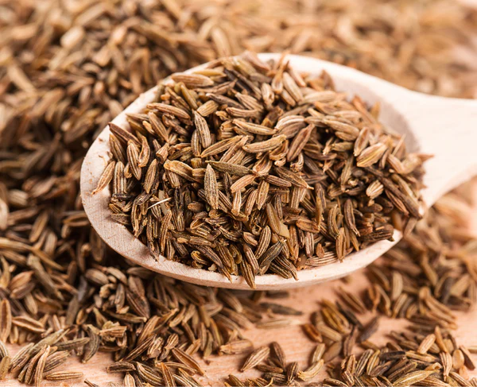
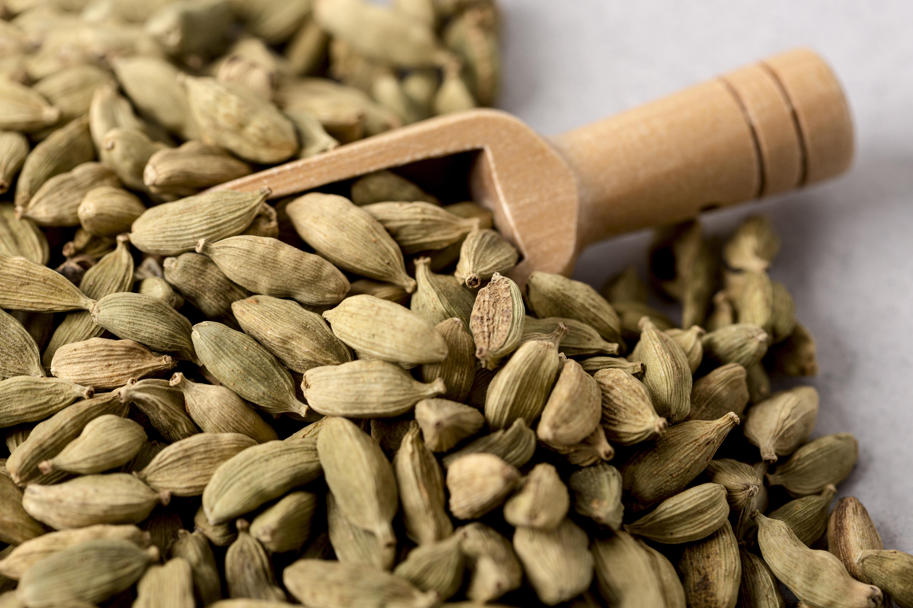
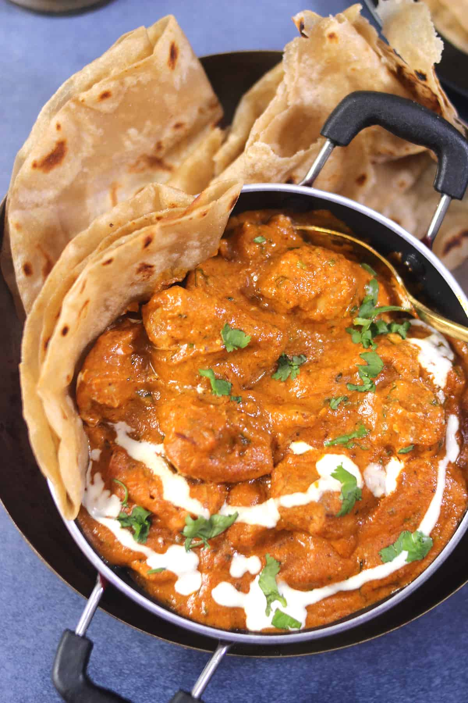
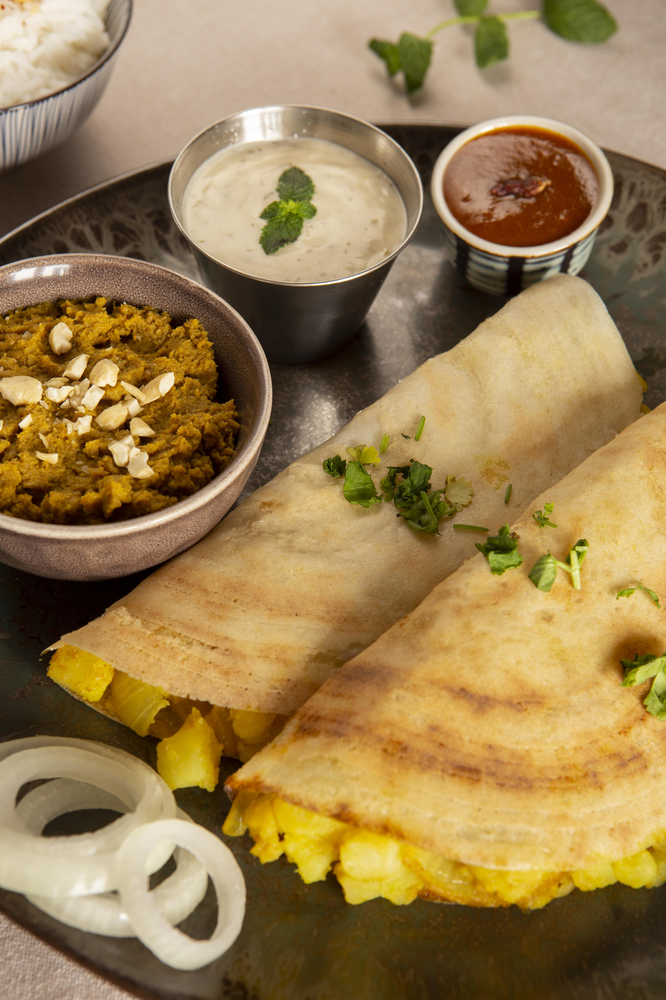
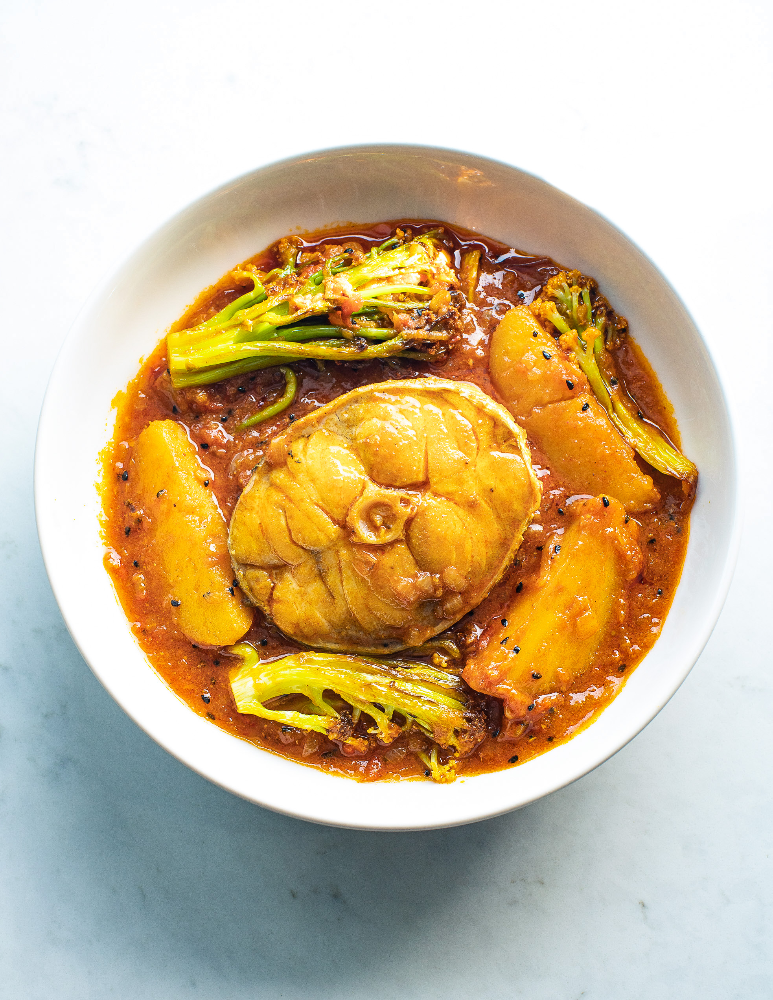
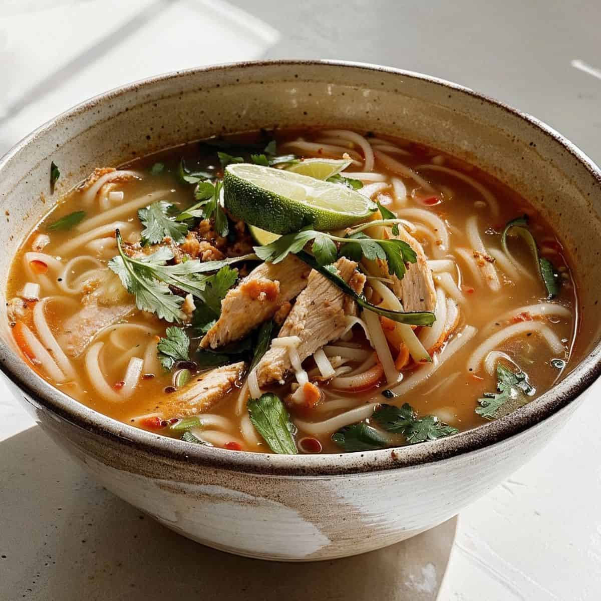
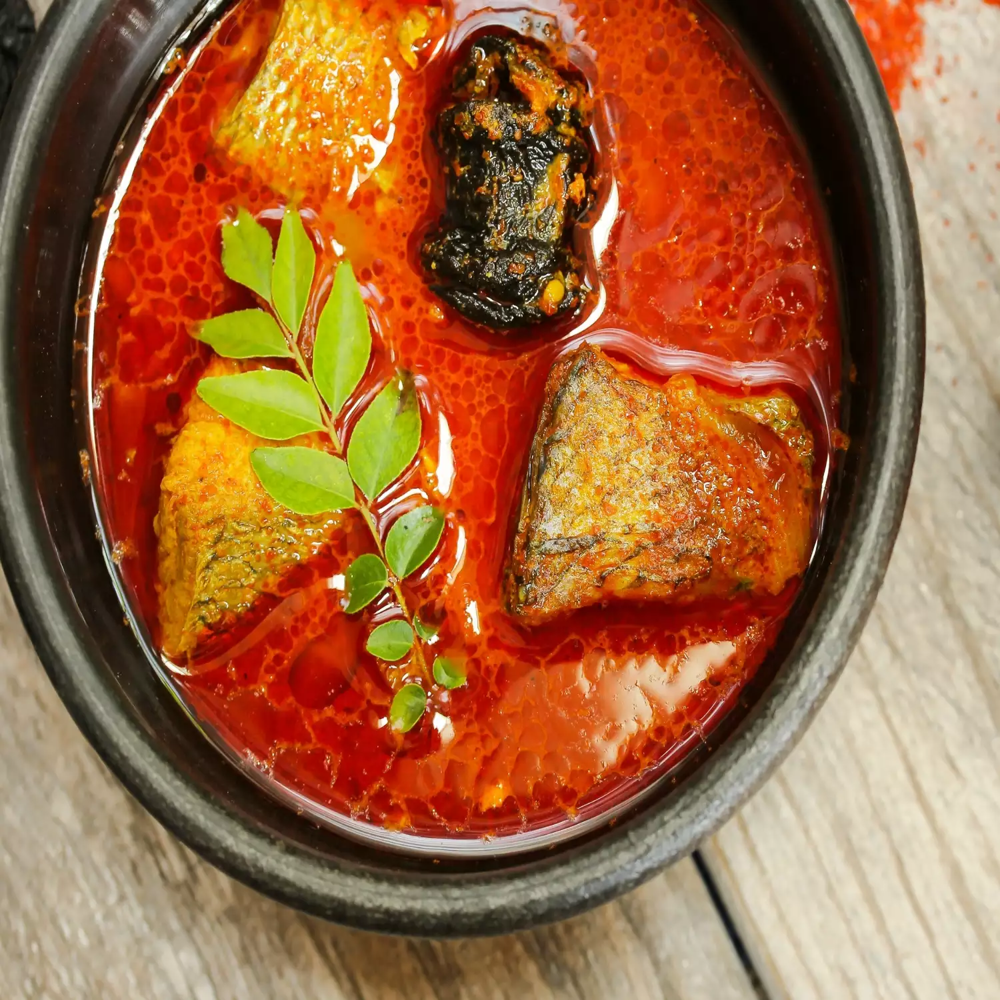

Indian cuisine has a rich and diverse history influenced by various cultures, regions, and eras. Agriculture in India began around 8000 BCE in North Rajasthan and developed through the Indus Valley civilization, introducing barley, wheat, and pulses. During the Vedic era (1500–600 BCE), Ayurvedic principles shaped dietary habits, emphasizing harmony and balance. The rise of Jainism and Buddhism (6th–1st century BCE) promoted vegetarianism, while the Gupta Empire (1st–5th century CE) expanded spice trade, including with the Roman Empire.
Puranic Hinduism introduced the concept of prasad, and Islamic influence began with Arab traders and flourished during the Mughal era, adding dishes like biryani and tandoori. The Portuguese (16th century) brought staples like chili and potatoes, while the British popularized tea, all contributing to India's vibrant culinary heritage.
A Taste of India's Culinary Diversity
Indian cuisine is celebrated for its bold flavors, intricate spice blends, and timeless cooking techniques. From the bustling streets of Delhi to the peaceful backwaters of Kerala, every dish offers a unique sensory journey. Reflecting India's rich tapestry of cultures, traditions, and regional distinctions, Indian food presents a vast and diverse culinary landscape. Each region shines with its own specialties, showcasing local ingredients and distinct culinary practices. Indian restaurants around the world strive to encapsulate this diversity, giving diners a taste of the country's culinary heritage and the chance to be transported to different parts of India with every bite.
A Symphony of Spices
Indian cuisine owes much of its complexity and allure to the masterful use of spices, each with a unique flavor profile and role. Together, these spices create a harmonious balance of flavors, making Indian food a sensory delight.

Cumin
Earthy, warm, and slightly bitter.
Coriander
Citrusy brightness, perfect with cumin.
Turmeric
Earthy flavor with anti-inflammatory benefits.
Chili Powder
Customizable heat, from mild to fiery.

Cardamom
Aromatic, slightly sweet, floral elegance.
Cloves
Pungent and intense, used sparingly.
Discover the Authentic Flavors
Discover how to make authentic Chicken Curry, as traditionally prepared by Michelin-starred Chef Akshay Bhardwaj’s family in New Delhi. With a perfect blend of spices like cumin, coriander, and garam masala, this dish offers a rich and aromatic taste of Indian home-cooking. Chef Bhardwaj guides you through the simple yet flavorful steps, showing how to bring the bold, comforting flavors of India to your kitchen.
 Chicken and Naan Known for rich, hearty dishes like butter chicken, dal makhani, and naan. The use of dairy (like paneer and ghee) is prominent.
 Masala Dosa Famous for rice-based dishes like dosa, idli, and sambhar. It's known for its spicy and tangy flavors
Daal-Baati-Churma Known for its royal, flavorful vegetarian dishes like dal-baati-churma and gatte ki sabzi, often cooked with aromatic spices.
Goan Fish Curry Famous for seafood, particularly Goan fish curry, with a mix of Portuguese and local Indian flavors.
Gujarati Thali Features a wide range of vegetarian food with a balance of sweet, salty, and spicy flavors, like the Gujarati thali.
 Maacher Jhol Famous for seafood and rice dishes like Maacher Jhol (fish curry), using mustard oil and spices.
 Thukpa Known for simple yet hearty dishes like thukpa (noodle soup) and momo (dumplings), influenced by Tibetan flavors.
 Masor Tenga Features dishes like Masor Tenga (sour fish curry) and is known for its use of fresh, local herbs and less oil.
Enjoy Indian Cuisine in Dubai
Dubai is well-known for having some of the best Indian delights, explore the restaurants offering a rich variety of authentic dishes and flavors from across the subcontinent.